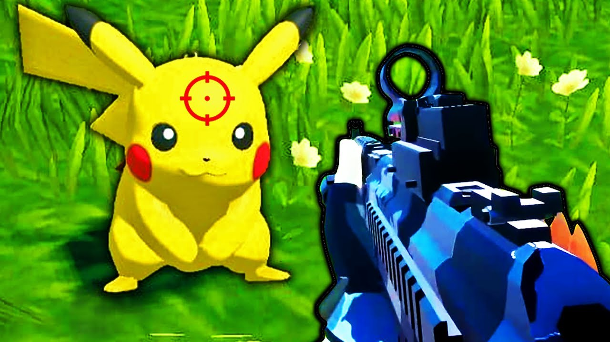
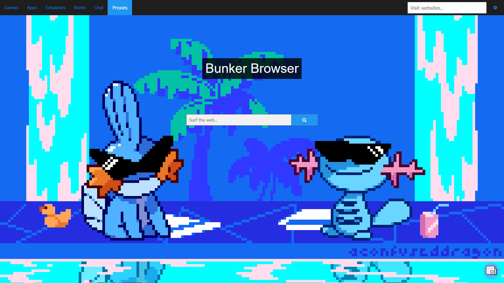
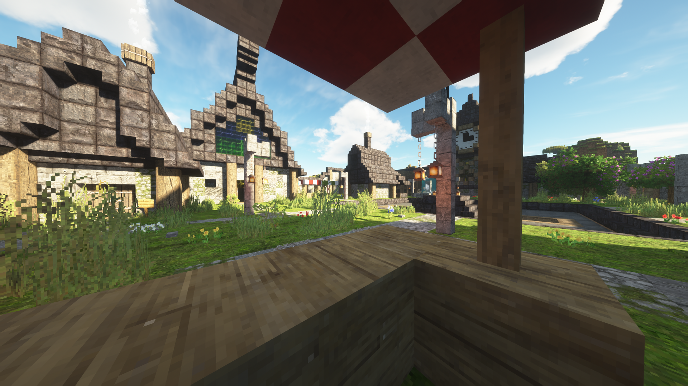

Projects:
Pokemon Gun
Pokemon Gun is a private game where you shoot innocent creatures with no reward.

Projects:
Bunker Browser
Bunker Browser is a project inspired by
Bunker. It is supposed to be a mixture of unblocked game websites and proxies as a local HTML file. The goal of it is to bypass school filters and spyware.

Projects:
Minecraft Servers
I have owned and managed many different Minecraft servers, but some servers I would like to point out are the Potato SMP and the Frontiers SMP. The Potato SMP is a small private content creator Earth SMP with a world double the size of the Earth SMP. The Frontiers SMP was a public server a friend hosted that never saw the light of day but had a lot of work gone into it with sub servers, Buycraft, custom assets, and more.